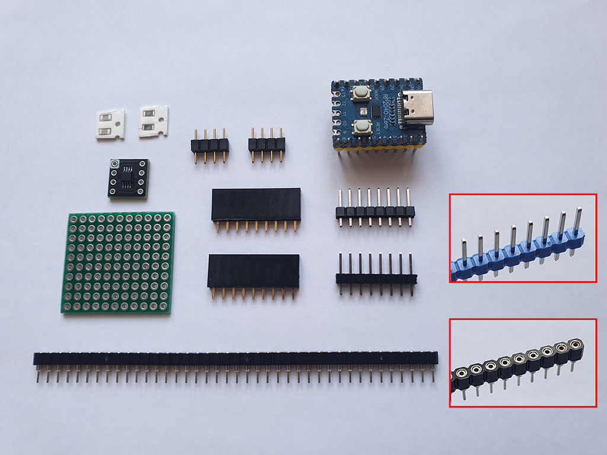

В программном обеспечении "Fritzing" составил схему соединений элементов на плате.
Исходный файл данной схемы вы можете загрузить из моего репозитория на GitHub
(ссылка).
Для пайки всех элементов на макетной плате необходим обычный электрический паяльник и один из разновидностей флюса (подойдет и обычная канифоль) для удаления оксидной пленки в процессе пайки, снижения поверхностного натяжения и улучшения растекания жидкого припоя.
Для более удобной пайки я изготовил из уже имеющегося на паяльнике жала (серии 900M) специальное "трубчатое" по следующей видео инструкции (ссылка). Все элементы у нас на столе и мы готовы к дальнейшей сборке.

Для начала нам необходимо припаять микросхему на плату-адаптер. Элемент довольно маленький, для работы с ним необходим определеный опыт работы с паяльником и соответственно тонкое жало (я использую наконечник типа 'BC2').
Получилась вот такая компактная печатная плата с установленными на ней предварительно заготовленными элементами.
Колодка в левой части платы предназначена для двух Data-линий подключаемых к светодиодной ленте (в данном варианте сборки используется параллельный многосегментный режим) и подключение +5v/Gnd от блока питания для питания переключателя уровня и самой платы Rp2040-Zero. Колодка расположенная в правой части платы предназначена для подключения к Raspberry Pi (SPI мост).
| Rp2040 | - | Raspberry |
|---|---|---|
| GPIO 2 | SCK | GPIO 11 |
| GPIO 4 | MOSI | GPIO 10 |
| GPIO 5 | CE0 | GPIO 8 |
| GND | GND | GND |
На этом данный этап подготовки светодиодного драйвера закончен.